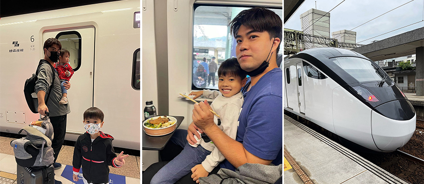
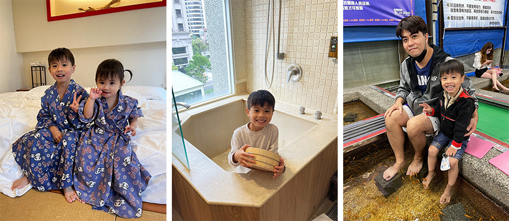
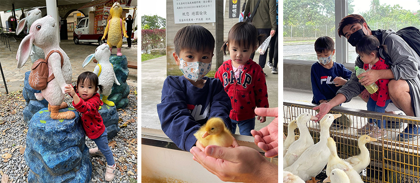

本次旅遊為身為火車迷的兒子，安排搭乘台鐵最新型的EMU3000型自強號，享受騰雲座艙的體驗，並且來了個礁溪兩天一夜溫泉輕旅。在EMU3000型自強號中只有第六節車廂是騰雲座艙且限定三十個位置，所以騰雲座艙的火車票都是非常搶手的，而這次有幸訂到了火車票，就趁著周休二日帶著小孩來趟火車之旅。
一早兒子充滿著期待與興奮的前往火車站準備搭車，EMU3000進站時黑白的車身配色顯得格外帥氣，兒子迫不及待想上車，進入騰雲座艙裡內裝很精緻且座位寬敞舒適，還提供免費WIFI和充電插座，搭乘騰雲座艙特別之處就是有附送多樣的餐點，可供旅客選擇，在訂票時預選餐點，列車出發後就會有專人直送餐點，這次選了鐵路便當，讓兒子能邊坐著火車邊享用火車便當，這個特別的體驗，不僅能享用美味的台鐵招牌排骨便當，還能沿途欣賞北海與山林的風光，並帶著愉悅的心情前往礁溪。
|  |
抵達礁溪火車站後，步行約十分鐘就可抵達下榻的華閣溫泉飯店，飯店充滿著濃濃的日本風味，房型選擇的也是日式塌塌米，小孩進房後開心地蹦蹦跳跳，飯店有兒童遊戲室和露天風呂SPA池、烤箱、蒸氣室，雖然飯店不大但設施齊全，整個下午都奢華的享受著飯店溫泉池，小朋友玩得不亦樂乎，接近傍晚時走路散步到礁溪大街，街道上遊客絡繹不絕，各種商家更是琳琅滿目，找了幾間店家飽食一頓之後，就是體驗最有特色的泡腳池，礁溪有名的"魚吃腳"泡腳池，本次選擇的店家相當有特色，繳交入場費後就可以開始體驗了，泡腳池分為好幾個等級，當然裡面的吃腳皮魚也依照等級大小不一，老闆很幽默的分成幼幼班、中班等，一路到資深員工都有，一開始兒子有點膽怯，先從幼幼班的魚種開始體驗，覺得腳很癢很有趣，兒子被逗的又是大叫又是大笑，表情更是千變萬化的有趣，先後嘗試了不同魚種，有的像是觸電微麻，有的像是拿著勺子在輕摳腳底，非常有趣，適合全家大小一起同樂，之後又品嚐當地推薦的美食與甜點，回飯店後，在房間內也可享受房間的溫泉，在輕鬆的心情下結束了第一天的行程。
|  |
隔天中午退房後，到飯店對面的礁溪溫泉公園尋找可愛的兔子裝置藝術拍照，女兒看到兔子銅像後興奮不已，直指著兔兔，咿咿呀呀的不知說了什麼，隨後搭乘區間車前往下一站"四城"在步行到"甲鳥園"，五星級的鴨寮環境乾淨，門票可以全抵消費，鴨寮建立在魚池上，鴨與魚有著一種生態互補的關係，園內有小鴨可以捧在手上近距離觀賞，兒子小心翼翼地捧起小鴨，細心的呵護著軟綿綿的鴨寶寶，也可以體驗餵成熟的大鴨和魚的，成鴨會搶食，稍微兇猛，也會咬到餵食的手掌，不過也是輕微的觸電感，很適合小朋友的農場。這兩天的行程兒子體驗了需多不同以往的新感受並深刻的烙印在腦海中，行程簡單且搭乘大眾交通工具可以避開去宜蘭的塞車，宜蘭距離不遠，不需要帶太多行李，只需輕裝上陣，不妨趁著周休二日帶著全家人一同出遊放鬆。
|  |